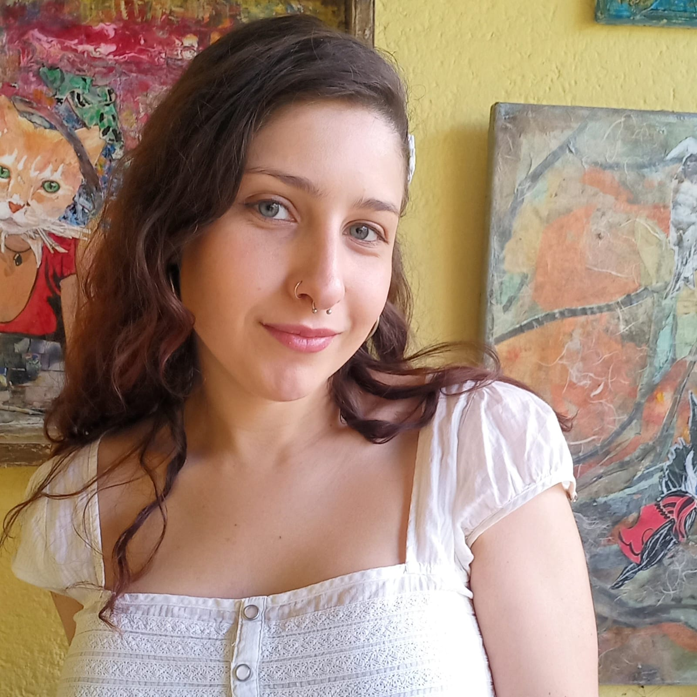
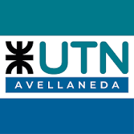
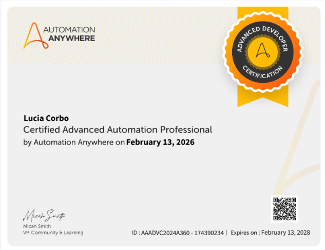
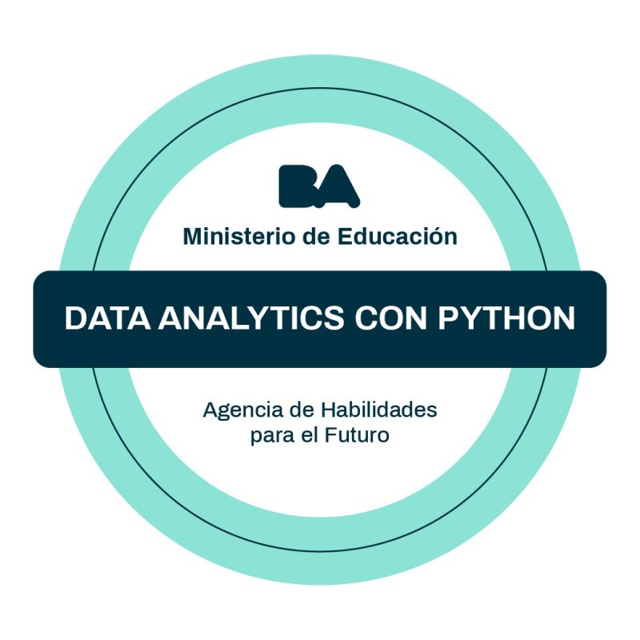
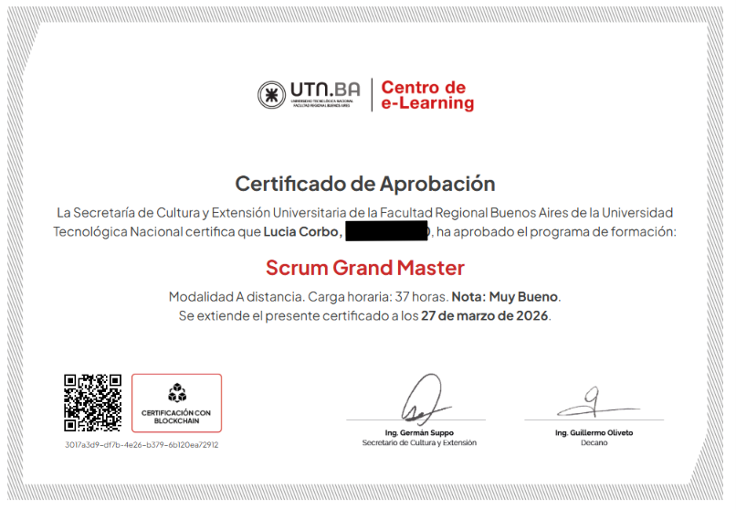
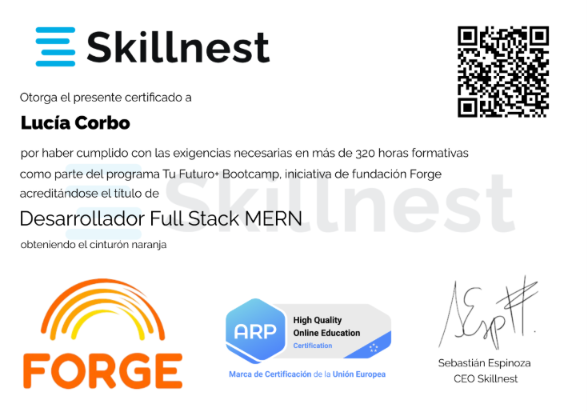
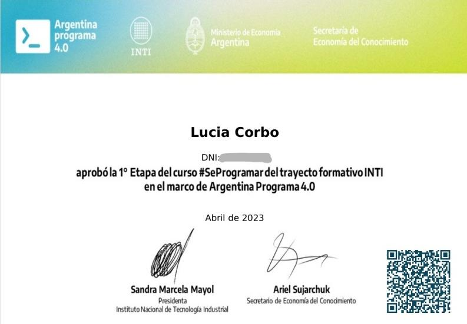
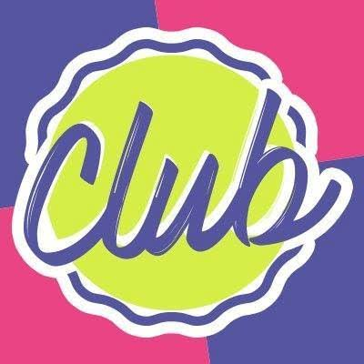

Alien Game
Un proyecto realizado en javascript sobre un gatito alienígena que juega mucho mucho mucho. Ya no se que mas poner.

Soy Técnica Universitaria en Programación, actualmente trabajo creando soluciones que simplifican procesos y ayuden a generar un impacto real.
Si algo aprendí en este camino, es que no me gusta encasillarme en una sola cosa. Además de la programación y automatización, me encanta explorar proyectos creativos, experimentando con el arte y enseñando sobre tecnología para acercarla a más personas. Creo profundamente que el conocimiento cobra más valor cuando se comparte.
Gracias por visitar mi página, ojalá disfrutes recorriéndola tanto como yo disfruté construyéndola.

Universidad Tecnológica Nacional (UTN)
Facultad Regional Avellaneda
Formación enfocada en el desarrollo de software, lógica de programación y resolución de problemas.
Aunque mi camino profesional comenzó hace algunos años, mi curiosidad por la tecnología empezó mucho antes. Todavía me acuerdo de cuando tenía alrededor de diez años e intenté hacer mi primera página web: decía "Hola mundo" y tenía la foto de un tigre. No era gran cosa, pero, sin saberlo, ya estaba dando mis primeros pasos.
Sin embargo, cuando llegó el momento de elegir una carrera, tomé otro rumbo. Fue durante la pandemia, mientras cursaba esa carrera, cuando empecé a preguntarme si realmente era lo que quería para mi futuro. Como les pasó a muchas personas, ese tiempo me hizo replantearme muchas cosas.
En ese contexto descubrí Argentina Programa, un curso que despertó algo que hacía tiempo no sentía: disfrutaba aprender, resolver problemas y crear. Me encontraba esperando el momento de sentarme a programar, y entendí que ese entusiasmo era una señal de que había encontrado mi lugar.
Así fue como, en 2022, decidí empezar la Tecnicatura Universitaria en Programación en la Universidad Tecnológica Nacional (UTN) – Facultad Regional Avellaneda.
No fue un camino sencillo. Venía de un secundario con orientación en Humanidades, por lo que muchas materias representaban un desafío completamente nuevo para mí. Hubo momentos de frustración, materias que costaron más que otras y el desafío de combinar el estudio con el trabajo. Pero, paradójicamente, mientras más me esforzaba, más convencida estaba de que había tomado la decisión correcta.
A finales de 2025 obtuve mi título de Técnica Universitaria en Programación. Más allá del diploma, me llevé algo mucho más valioso: la certeza de haber encontrado una profesión que me desafía, me entusiasma y me impulsa a seguir aprendiendo todos los días.
Durante ese recorrido desarrollé proyectos de todo tipo, aprendí nuevas herramientas y enfrenté desafíos que marcaron mi crecimiento. Muchos de esos proyectos forman parte de este portfolio y cuentan, mejor que cualquier descripción, cómo fui evolucionando a lo largo del camino.
Un proyecto realizado en javascript sobre un gatito alienígena que juega mucho mucho mucho. Ya no se que mas poner.
Un proyecto realizado en javascript sobre un gatito alienígena que juega mucho mucho mucho. Ya no se que mas poner.
Un proyecto realizado en javascript sobre un gatito alienígena que juega mucho mucho mucho. Ya no se que mas poner.

Advanced Developer (Automation Anywhere)

Análisis de datos con Python

Scrum Grand Master (UTN)

MERN Stack (Skillnest / Forge)

Argentina Programa 4.0
Desarrollo e implementación de bots utilizando Automation Anywhere (A360) y Power Automate Desktop para optimizar tareas operativas.
Creación de flujos de trabajo automatizados y conexión entre diferentes servicios y APIs utilizando herramientas como n8n.
Desarrollo e implementación de bots utilizando Automation Anywhere (A360) y Power Automate Desktop para optimizar tareas operativas.
Creación de flujos de trabajo automatizados y conexión entre diferentes servicios y APIs utilizando herramientas como n8n.

Tuve la oportunidad de ser parte de Chicas Programadoras como profe de Código Creativo y acompañar a un grupo de chicas entre 13 y 17 años en sus primeros pasos en el mundo de la programación.
Más allá de enseñar código, disfruté mucho poder incentivar su curiosidad, acompañarlas mientras aprendían y ver cómo, clase a clase, se animaban a crear, preguntar y experimentar.
Fue una experiencia muy linda que me recordó que compartir lo que uno sabe también es una forma de seguir aprendiendo. 💜
Durante el curso trabajamos:

Taza de la suerte.
Una descripción muy corta.
Una descripción muy corta.